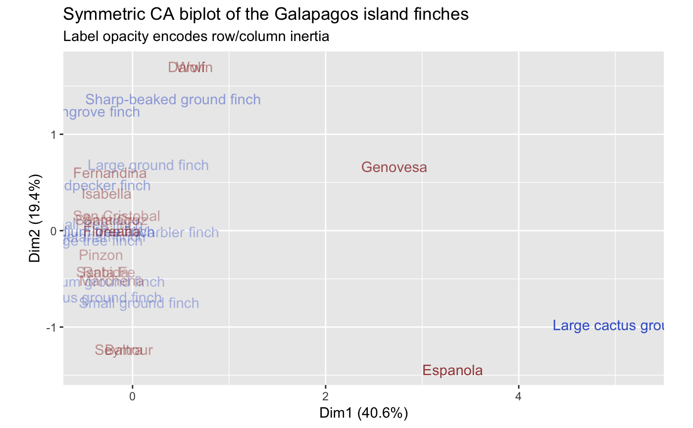
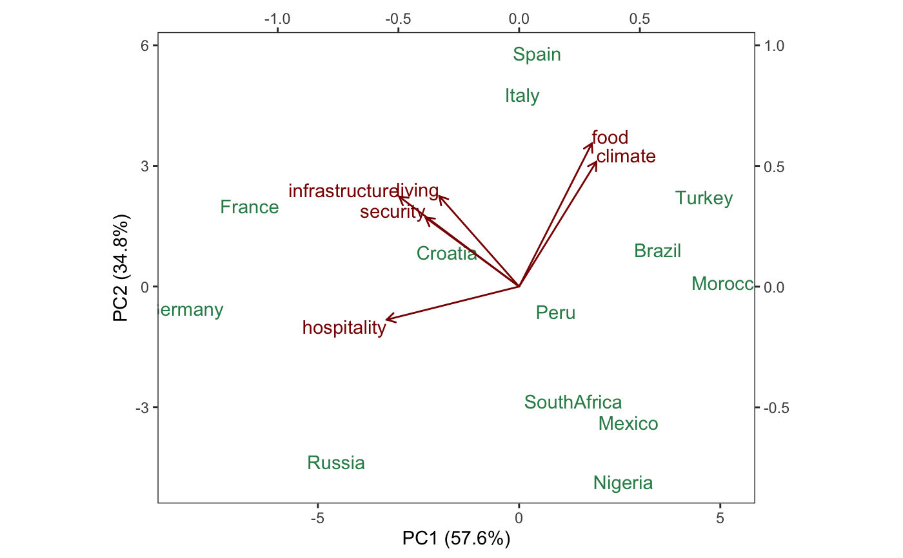
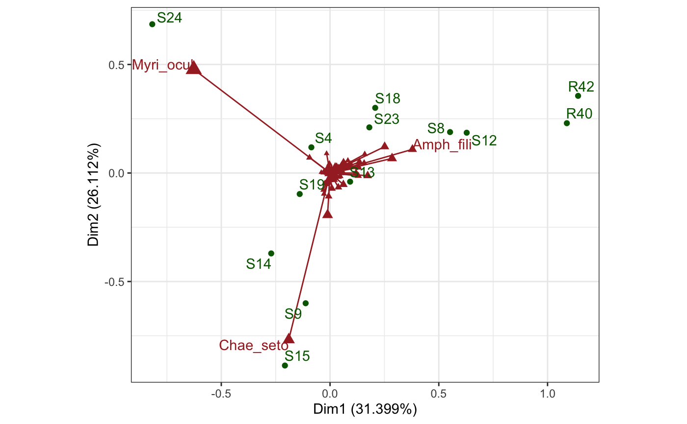

Render text and labels at ordinates
geom-biplot-text.Rdgeom_*_text() renders text, and geom_*_label() labels, at
the positions of the subjects or vectors. geom_*_text_repel() and
geom_*_label_repel() invoke functionality from the
ggrepel package.
geom_rows_text( mapping = NULL, data = NULL, stat = "identity", position = "identity", ..., parse = FALSE, nudge_x = 0, nudge_y = 0, check_overlap = FALSE, na.rm = FALSE, show.legend = NA, inherit.aes = TRUE ) geom_cols_text( mapping = NULL, data = NULL, stat = "identity", position = "identity", ..., parse = FALSE, nudge_x = 0, nudge_y = 0, check_overlap = FALSE, na.rm = FALSE, show.legend = NA, inherit.aes = TRUE ) geom_dims_text( mapping = NULL, data = NULL, stat = "identity", position = "identity", .matrix = "rows", ..., parse = FALSE, nudge_x = 0, nudge_y = 0, check_overlap = FALSE, na.rm = FALSE, show.legend = NA, inherit.aes = TRUE ) geom_rows_label( mapping = NULL, data = NULL, stat = "identity", position = "identity", ..., parse = FALSE, na.rm = FALSE, show.legend = NA, inherit.aes = TRUE ) geom_cols_label( mapping = NULL, data = NULL, stat = "identity", position = "identity", ..., parse = FALSE, na.rm = FALSE, show.legend = NA, inherit.aes = TRUE ) geom_dims_label( mapping = NULL, data = NULL, stat = "identity", position = "identity", .matrix = "rows", ..., parse = FALSE, na.rm = FALSE, show.legend = NA, inherit.aes = TRUE ) geom_rows_text_repel( mapping = NULL, data = NULL, stat = "identity", position = "identity", ..., parse = FALSE, na.rm = FALSE, show.legend = NA, inherit.aes = TRUE ) geom_cols_text_repel( mapping = NULL, data = NULL, stat = "identity", position = "identity", ..., parse = FALSE, na.rm = FALSE, show.legend = NA, inherit.aes = TRUE ) geom_dims_text_repel( mapping = NULL, data = NULL, stat = "identity", position = "identity", .matrix = "rows", ..., parse = FALSE, na.rm = FALSE, show.legend = NA, inherit.aes = TRUE ) geom_rows_label_repel( mapping = NULL, data = NULL, stat = "identity", position = "identity", ..., parse = FALSE, na.rm = FALSE, show.legend = NA, inherit.aes = TRUE ) geom_cols_label_repel( mapping = NULL, data = NULL, stat = "identity", position = "identity", ..., parse = FALSE, na.rm = FALSE, show.legend = NA, inherit.aes = TRUE ) geom_dims_label_repel( mapping = NULL, data = NULL, stat = "identity", position = "identity", .matrix = "rows", ..., parse = FALSE, na.rm = FALSE, show.legend = NA, inherit.aes = TRUE )
Arguments
| mapping | Set of aesthetic mappings created by |
|---|---|
| data | The data to be displayed in this layer. There are three options: If A A |
| stat | The statistical transformation to use on the data for this layer, as a string. |
| position | Position adjustment, either as a string, or the result of a call to a position adjustment function. |
| ... | Additional arguments passed to |
| parse, check_overlap, nudge_x, nudge_y | See |
| na.rm | Passed to |
| show.legend | logical. Should this layer be included in the legends?
|
| inherit.aes | If |
| .matrix | A character string matching one of several indicators for one
or both matrices in a matrix decomposition used for ordination. The
standard values are |
Biplot layers
ggbiplot() uses ggplot2::fortify() internally to produce a single data
frame with a .matrix column distinguishing the subjects ("rows") and
variables ("cols"). The stat layers stat_rows() and stat_cols() simply
filter the data frame to one of these two.
The geom layers geom_rows_*() and geom_cols_*() call the corresponding
stat in order to render plot elements for the corresponding factor matrix.
geom_dims_*() selects a default matrix based on common practice, e.g.
points for rows and arrows for columns.
Aesthetics
geom_*_text(), geom_*_label(), geom_*_text_repel(), and
geom_*_label_repel() understand the following aesthetics (required
aesthetics are in bold):
xylabelalphaanglecolourfamilyfontfacehjustlineheightsizevjustgroup
Examples
# Correspondence analysis of Sanderson finches data data(finches) finches %>% ca::ca() %>% as_tbl_ord() %>% confer_inertia(.5) %>% augment() %>% print() -> finches_ca#> # A tbl_ord of class 'ca': (13 x 12) x (17 x 12)' #> # 12 coordinates: Dim1, Dim2, ..., Dim12 #> # #> # Rows: [ 13 x 12 | 4 ] #> Dim1 Dim2 Dim3 ... | .name .mass .dist .inertia #> | <chr> <dbl> <dbl> <dbl> #> 1 0.165 0.685 0.320 | 1 Large groun… 0.115 0.573 0.0377 #> 2 -0.368 -0.522 0.0167 ... | 2 Medium grou… 0.107 0.489 0.0255 #> 3 0.0685 -0.743 -0.126 | 3 Small groun… 0.115 0.526 0.0317 #> 4 0.420 1.37 0.417 | 4 Sharp-beake… 0.0820 0.994 0.0810 #> 5 -0.365 -0.691 0.244 | 5 Cactus grou… 0.0984 0.608 0.0364 #> # … with 8 more rows #> # #> # Columns: [ 17 x 12 | 4 ] #> Dim1 Dim2 Dim3 ... | .name .mass .dist .inertia #> | <chr> <dbl> <dbl> <dbl> #> 1 -0.0909 -1.23 0.274 | 1 Seymour 0.0328 1.10 0.0398 #> 2 -0.0909 -1.23 0.274 ... | 2 Baltra 0.0328 1.10 0.0398 #> 3 -0.269 0.389 -0.783 | 3 Isabella 0.0902 0.657 0.0389 #> 4 -0.233 0.601 -0.933 | 4 Fernandina 0.0820 0.794 0.0517 #> 5 -0.221 0.117 -0.136 | 5 Santiago 0.0820 0.349 0.00998 #> # … with 12 more rowsfinches_ca %>% ggbiplot(aes(label = .name)) + geom_rows_text(aes(alpha = .inertia), color = "royalblue3") + geom_cols_text(aes(alpha = .inertia), color = "darkred") + scale_alpha_continuous(range = c(.3, 1), guide = "none") + ggtitle( "Symmetric CA biplot of the Galapagos island finches", "Label opacity encodes row/column inertia" ) + expand_limits(x = c(-1, 6))# Confer PCA weights and inertia between cases and variables data(country_attributes) country_attributes %>% prcomp() %>% as_tbl_ord() %>% print() -> attributes_pca#> # A tbl_ord of class 'prcomp': (13 x 6) x (6 x 6)' #> # 6 coordinates: PC1, PC2, ..., PC6 #> # #> # Rows: [ 13 x 6 | 0 ] #> PC1 PC2 PC3 ... | #> | #> 1 0.0796 4.77 0.0922 | #> 2 0.451 5.80 1.30 ... | #> 3 -1.79 0.842 0.0145 | #> 4 3.45 0.906 0.250 | #> 5 -4.54 -4.36 -0.0156 | #> #> # #> # Columns: [ 6 x 6 | 0 ] #> PC1 PC2 PC3 ... | #> | #> 1 -0.331 0.375 0.00981 | #> 2 0.320 0.517 0.187 | #> 3 0.301 0.593 -0.616 ... | #> 4 -0.387 0.286 0.145 | #> 5 -0.548 -0.138 -0.661 | #> 6 -0.497 0.373 0.357 |# form biplot attributes_pca %>% ggbiplot( aes(label = .name), sec.axes = "cols", scale.factor = dim_cols(attributes_pca) ) + theme_bw() + theme(panel.grid = element_blank()) + geom_rows_text(aes(x = PC1, y = PC2), color = "seagreen") + geom_cols_vector(aes(x = PC1, y = PC2), color = "darkred") + geom_cols_text( aes(x = PC1, y = PC2), color = "darkred", hjust = "outward", vjust = "outward" )# covariance biplot attributes_pca %>% confer_inertia(0) %>% ggbiplot( aes(label = .name), sec.axes = "rows", scale.factor = dim_rows(attributes_pca) ) + theme_bw() + theme(panel.grid = element_blank()) + geom_rows_text(aes(x = PC1, y = PC2), color = "seagreen") + geom_cols_vector(aes(x = PC1, y = PC2), color = "darkred") + geom_cols_text_repel(aes(x = PC1, y = PC2), color = "darkred")# Confer inertia in CA between rows and columns of benthic sample data data(benthos) benthos %>% ca::ca() %>% as_tbl_ord() %>% print() -> benthos_ca#> # A tbl_ord of class 'ca': (92 x 12) x (13 x 12)' #> # 12 coordinates: Dim1, Dim2, ..., Dim12 #> # #> # Rows: [ 92 x 12 | 0 ] #> Dim1 Dim2 Dim3 ... | #> | #> 1 -1.17 0.895 -0.140 | #> 2 -0.552 -2.23 -0.359 ... | #> 3 -0.0406 -0.689 0.687 | #> 4 1.22 0.287 -0.700 | #> 5 0.312 0.142 -0.137 | #> #> # #> # Columns: [ 13 x 12 | 0 ] #> Dim1 Dim2 Dim3 ... | #> | #> 1 -0.173 0.262 -0.376 | #> 2 1.11 0.417 1.52 ... | #> 3 -0.226 -1.33 -0.297 | #> 4 1.27 0.411 1.37 | #> 5 0.186 -0.0884 0.568 | #># Reproduce Exhibit 8.3 benthos_ca %>% confer_inertia("colprincipal") %>% ggbiplot(aes(label = .name)) + theme_bw() + geom_rows_point(color = "brown", size = 1) + geom_cols_text(color = "darkgreen")# Reproduce Exhibit 8.4 benthos_ca %>% augment(.matrix = "rows") %>% transmute_rows(mass = .mass, sqrt_mass = sqrt(.mass)) %>% confer_inertia("colprincipal") %>% ggbiplot(aes(label = .name), scale_rows = "sqrt_mass") + theme_bw() + geom_rows_vector(color = "brown", arrow = NULL) + geom_rows_point(aes(size = mass), color = "brown", shape = 17) + scale_size_continuous(range = c(1, 4), guide = "none") + geom_rows_text( stat = "chull", color = "brown", hjust = "outward", vjust = "outward" ) + geom_cols_point(color = "darkgreen") + geom_cols_text_repel(color = "darkgreen", min.segment.length = 2)